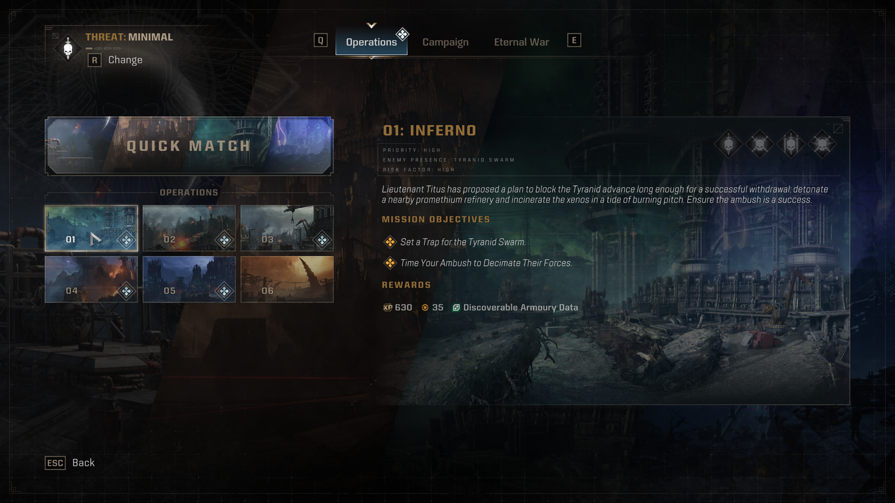
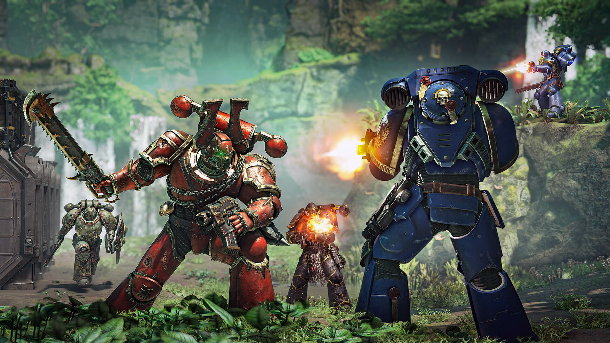

Lets get into Space Marine 2

Welcome brother! lookin to jump in and fight for your fellow brothers across the galaxy? Space Marine 2 offers brutal combat with a lot of very cool armor and weapons to fend off against aliens. Space Marine 2 has three specific modes, Operations, Eternal War and the Campaign.
Get Started
Operations
Space Marine OPerations allow for you and your friends to take on specific missions fighting an alien Race called the tyranids. Each operation has multiple levels of difficulty the player can choose from if they're looking for more of a challenge. While fighting the tyranids the player will gain experience which contributes to their level specific to this mode. This allows for the unlocks of new weapons as well as armor pieces and weapon skins wor their player.
Eternal War
Eternal War is the pvp game mode of space Marine 2. Battle solo or with friends against other players as a space marine. Eternal War has a level system specific to this mode that allows fr the unlock of cosmetics and weapons. There are 6 different classes like the operations mode such as Tactical, Assault, Vanguard, BulWark, Sniper and Heavy. Each class has different amounts of health along with a specific abillity. The weapons the player are able to put on is also dependant on the class. Th
Events
Stay up-to-date with the latest Space Marine patches, DLC upated, and more.